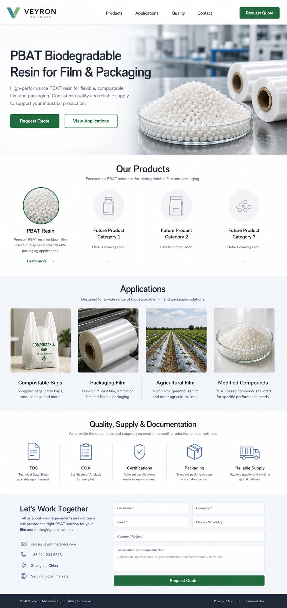

PBAT
PBAT Resin
A flexible biodegradable polyester commonly used in compostable films, bags, packaging materials, and modified resin compounds.
Ask for TDSFlexible compostable material solutions for industrial film, bag, packaging, and biodegradable compound production.

Veyron Materials is preparing a dedicated PBAT supply page for overseas buyers. Technical data, packaging photos, certification documents, and detailed product grades will be added after confirmation.
Start with PBAT resin now. More biodegradable material pages can be connected later.
A flexible biodegradable polyester commonly used in compostable films, bags, packaging materials, and modified resin compounds.
Ask for TDSFuture product page placeholder.
Future product page placeholder.
Future product page placeholder.
Built around the buyer use cases that matter most for PBAT purchasing.
This area is reserved for confirmed technical and commercial details. Once the product files are ready, the page can show downloadable TDS, COA, certification notes, packaging photos, MOQ, and lead time.
Send an inquiry for PBAT resin pricing, sample availability, technical data, or packaging details.